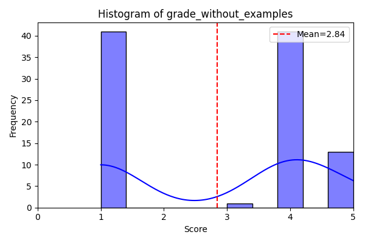

AI Assistant Analysis Report
1. Summary Statistics
The table below shows the descriptive statistics (including percentiles) for each model’s grades.
| Metric | grade_without_examples | grade_base | grade_fine_tuned |
|---|---|---|---|
| count | 92.0 | 92.0 | 92.0 |
| mean | 4.358695652173913 | 4.739130434782608 | 4.543478260869565 |
| std | 0.8063146624773381 | 0.4415150045959088 | 0.6361464251628642 |
| min | 2.0 | 4.0 | 2.0 |
| 25% | 4.0 | 4.0 | 4.0 |
| 50% | 5.0 | 5.0 | 5.0 |
| 75% | 5.0 | 5.0 | 5.0 |
| max | 5.0 | 5.0 | 5.0 |
2. Correlation Matrix
The correlation matrix between the different grade columns:
| grade_without_examples | grade_base | grade_fine_tuned | |
|---|---|---|---|
| grade_without_examples | 1.00 | 0.48 | 0.60 |
| grade_base | 0.48 | 1.00 | 0.47 |
| grade_fine_tuned | 0.60 | 0.47 | 1.00 |
3. Visualizations
Histograms
grade_without_examples
grade_base

grade_fine_tuned

Boxplot
Distribution of all model grades: